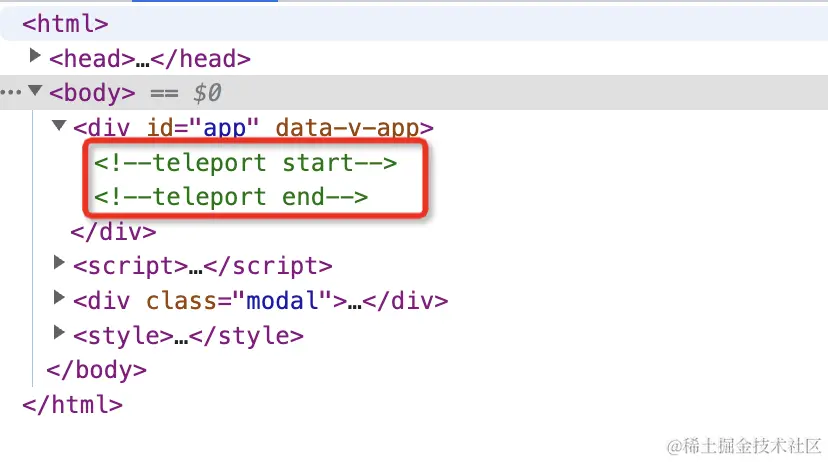

Teleport 内置组件的功能是可以将一个组件内部的一部分 vnode 元素 “传送” 到该组件的 DOM 结构外层的位置去挂载。那什么情况下可能会用到该组件呢？如果开发过组件库的小伙伴可能深有体会，当我们开发全局 Dialog 组件来说，我们希望 Dialog 的组件可以渲染到全局 <body> 标签上，这个时候我们写的 Dialog 组件的源代码可能是这样的：
html复制代码<template>
<div>
<!-- 这里是 dialog 组件的容器逻辑 -->
</div>
</template>
<script>
export default {
mounted() {
// 在 dom 被挂载完成后，再转移到 body 上
document.body.appendChild(this.$el);
},
destroyed() {
// 在组件被销毁之前，移除 DOM
this.$el.parentNode.removeChild(this.$el);
}
}
</script>
这么做确实可是实现挂载到特定容器中，但这样一方面让 Dialog 组件内部需要维护复杂的 DOM 节点转换的逻辑，另一方面导致了浏览器需要进行 2 次刷新操作，一次初始化挂载，一次迁移。
所以 Vue 3 很贴心的为我们了提供了 Teleport 组件，帮助我们以简便的方式高性能的完成节点的转移工作:
html复制代码<Teleport to="body">
<div class="modal">
<p>Hello from the modal!</p>
</div>
</Teleport>
接下来我们将一起探秘 Teleport 组件是如何实现 “传送” 挂载的。
先来看看 Teleport 组件的源码定义：
js复制代码export const TeleportImpl = {
// 组件标记
__isTeleport: true,
process(...) {
// ...
// 初始化的逻辑
if (n1 === null) {
// ...
} else {
// ...
// 更新逻辑
}
},
// 卸载的逻辑
remove(...) {
// ...
},
// 移动的逻辑
move: moveTeleport,
// ...
}
接下来，我们看一下这个内部组件是如何实现组件挂载的，这块的逻辑集中在组件的 process 函数中，process 函数是在渲染器 renderer 的 patch 函数中被调用的，在前面渲染器章节中，我们提到过 patch 函数内部会根据 vnode 的 type 和 shapeFlag 的类型调用不同的处理函数，而 <Teleport> 组件的 process 正是在这里被判断调用的：
js复制代码const patch = (n1, n2, container, anchor, ...) => {
// ...
const { type, ref, shapeFlag } = n2
switch (type) {
// 根据 type 类型处理
case Text:
// 对文本节点的处理
processText(n1, n2, container, anchor)
break
// 这里省略了一些其他节点处理，比如注释、Fragment 节点等等
// ...
default:
// 根据 shapeFlag 来处理
// ...
else if (shapeFlag & ShapeFlags.TELEPORT) {
// 对 Teleport 节点进行处理
type.process(
n1,
n2,
container,
anchor,
parentComponent,
parentSuspense,
isSVG,
slotScopeIds,
optimized,
internals
);
}
}
}
然后一起来看看 process 中是如何完成对 Teleport 中的节点进行挂载的，这里我们先只关注挂载逻辑，对于更新逻辑后面再介绍：
js复制代码export const TeleportImpl = {
// 组件标记
__isTeleport: true,
process(n1, n2, container, anchor, parentComponent, parentSuspense, isSVG, slotScopeIds, optimized, internals) {
// 从内在对象上结构关键功能函数
const {
mc: mountChildren,
pc: patchChildren,
pbc: patchBlockChildren,
o: {insert, querySelector, createText, createComment}
} = internals
// 是否禁用
const disabled = isTeleportDisabled(n2.props)
let {shapeFlag, children, dynamicChildren} = n2
// 初始化的逻辑
if (n1 == null) {
// 向主视图中插入锚点
const placeholder = (n2.el = __DEV__
? createComment('teleport start')
: createText(''))
const mainAnchor = (n2.anchor = __DEV__
? createComment('teleport end')
: createText(''))
insert(placeholder, container, anchor)
insert(mainAnchor, container, anchor)
// 获取需要挂载的位置元素，如果目标元素不存在于DOM中，则返回 null
const target = (n2.target = resolveTarget(n2.props, querySelector))
// 目标挂载节点的锚点
const targetAnchor = (n2.targetAnchor = createText(''))
// 如果存在目标元素
if (target) {
// 将锚点插入到目标元素当中
insert(targetAnchor, target)
isSVG = isSVG || isTargetSVG(target)
}
const mount = (container: RendererElement, anchor: RendererNode) => {
// teleport 子节点需要是个数组
// 挂载子节点
if (shapeFlag & ShapeFlags.ARRAY_CHILDREN) {
mountChildren(
children,
container,
anchor,
parentComponent,
parentSuspense,
isSVG,
slotScopeIds,
optimized
)
}
}
// 如果禁用 teleport 则直接挂载到当前渲染节点中
if (disabled) {
mount(container, mainAnchor)
} else if (target) {
// 否则，以 targetAnchor 为参照物进行挂载
mount(target, targetAnchor)
}
} else {
// 进入更新逻辑
}
},
}
这里，我们先不着急着看源码，我们先看看一个 teleport 节点在开发环境会被渲染成什么样子：
html复制代码<template>
<Teleport to="body">
<div class="modal">
<p>Hello from the modal!</p>
</div>
</Teleport>
</template>
上述的模版，的渲染结果如下：
可以看到，已经被渲染到 body 元素当中，除了这个变化外，之前的容器中，还多了两个额外的注释符：
html复制代码<!--teleport start-->
<!--teleport end-->
这下我们再来看看源码，或许就能更好的理解这些变化了。首先，在初始化中，会先创建两个占位符，分别是 placeholder 和 mainAnchor 然后再讲这两个占位符挂载到组件容器中，这两个占位符也就是上文中的注释节点。
接着又创建了一个目标节点的占位符 targetAnchor 这个则会被挂载到目标容器中，只不过这里是个文本节点，所以在 DOM 上没有体现出来，我们把这里稍微改一下：
js复制代码const targetAnchor = (n2.targetAnchor = createComment('teleport target'))
这样再看一下 DOM 的渲染结果：
最后再根据 disabled 这个 props 属性来判断当前的节点需要采用哪种方式渲染，如果 disabled = true 则会以 mainAnchor 为参考节点进行挂载，也就是挂载到主容器中，否则会以 targetAnchor 为参考节点进行挂载，挂载到目标元素容器中。至此，完成节点的初始化挂载逻辑。
如果 Teleport 组件需要进行更新，则会进入更新的逻辑：
js复制代码export const TeleportImpl = {
// 组件标记
__isTeleport: true,
process(n1, n2, container, anchor, parentComponent, parentSuspense, isSVG, slotScopeIds, optimized, internals) {
// 从内在对象上结构关键功能函数
const {
mc: mountChildren,
pc: patchChildren,
pbc: patchBlockChildren,
o: {insert, querySelector, createText, createComment}
} = internals
// 是否禁用
const disabled = isTeleportDisabled(n2.props)
let {shapeFlag, children, dynamicChildren} = n2
// 初始化的逻辑
if (n1 == null) {
// ...
} else {
// 从老节点上获取相关参照系等属性
n2.el = n1.el
const mainAnchor = (n2.anchor = n1.anchor)!
const target = (n2.target = n1.target)!
const targetAnchor = (n2.targetAnchor = n1.targetAnchor)!
// 之前是不是禁用态
const wasDisabled = isTeleportDisabled(n1.props)
// 当前的渲染容器
const currentContainer = wasDisabled ? container : target
// 参照节点
const currentAnchor = wasDisabled ? mainAnchor : targetAnchor
isSVG = isSVG || isTargetSVG(target)
// 通过 dynamicChildren 更新节点
if (dynamicChildren) {
// fast path when the teleport happens to be a block root
patchBlockChildren(
n1.dynamicChildren!,
dynamicChildren,
currentContainer,
parentComponent,
parentSuspense,
isSVG,
slotScopeIds
)
traverseStaticChildren(n1, n2, true)
} else if (!optimized) {
// 全量更新
patchChildren(
n1,
n2,
currentContainer,
currentAnchor,
parentComponent,
parentSuspense,
isSVG,
slotScopeIds,
false
)
}
if (disabled) {
if (!wasDisabled) {
// enabled -> disabled
// 移动回主容器
moveTeleport(
n2,
container,
mainAnchor,
internals,
TeleportMoveTypes.TOGGLE
)
}
} else {
// 目标元素被改变
if ((n2.props && n2.props.to) !== (n1.props && n1.props.to)) {
// 获取新的目标元素
const nextTarget = (n2.target = resolveTarget(
n2.props,
querySelector
))
// 移动到新的元素当中
if (nextTarget) {
moveTeleport(
n2,
nextTarget,
null,
internals,
TeleportMoveTypes.TARGET_CHANGE
)
}
} else if (wasDisabled) {
// disabled -> enabled
// 移动到目标元素中
moveTeleport(
n2,
target,
targetAnchor,
internals,
TeleportMoveTypes.TOGGLE
)
}
}
}
},
}
代码量虽然挺多的，但所做的事情是特别明确的，首先 Teleprot 组件的更新需要和普通节点更新一样进行子节点的 diff。然后会判断 Teleport 组件的 props 是否有变更，主要就是 disabled 和 to 这两个参数。
如果 disabled 变化，无非就是从 可用 -> 不可用 或者从 不可用 -> 可用。从 可用 -> 不可用 就是将原来挂在在 target 容器中的节点重新移动到主容器中，而从 不可用 -> 可用 就是将主容器中的节点再挂载到 target 中。
如果 to 这个参数变化了，那么就需要重新寻找目标节点，再进行挂载。
当组件卸载时，我们需要移除 Teleport 组件，一起再看看卸载重对于 Teleport 组件的处理：
js复制代码const unmount = (vnode, parentComponent, parentSuspense, doRemove, optiomized) => {
// ...
if (shapeFlag & ShapeFlags.TELEPORT) {
vnode.type.remove(
vnode,
parentComponent,
parentSuspense,
optimized,
internals,
doRemove
)
}
// ...
}
unmount 卸载函数对于 Teleport 组件的处理就是直接调用 remove 方法：
js复制代码export const TeleportImpl = {
// 组件标记
__isTeleport: true,
remove(vnode, parentComponent, parentSuspense, optimized, { um: unmount, o: { remove: hostRemove } }, doRemove) {
const { shapeFlag, children, anchor, targetAnchor, target, props } = vnode
// 如果存在 target，移除 targetAnchor
if (target) {
hostRemove(targetAnchor!)
}
// 在未禁用状态下，需要卸载 teleport 的子元素
if (doRemove || !isTeleportDisabled(props)) {
hostRemove(anchor!)
if (shapeFlag & ShapeFlags.ARRAY_CHILDREN) {
for (let i = 0; i < children.length; i++) {
const child = children[i]
unmount(
child,
parentComponent,
parentSuspense,
true,
!!child.dynamicChildren
)
}
}
}
}
}
remove 方法的操作，看起来也比较好理解，首先先移除掉 targetAnchor 锚点内容，然后再调用 unmount 函数挨个卸载子组件，从而完成卸载功能。
本小节，我们分析了 Teleport 组件的核心实现原理，Teleport 相比于之前的那种挂载方式他的性能优势就在于 Teleport 节点的挂载是在 patch 阶段进行的，也就是在 patch 阶段就确定了需要挂载到哪里，而不会出现先挂在到主容器再迁移到目标容器的情况。